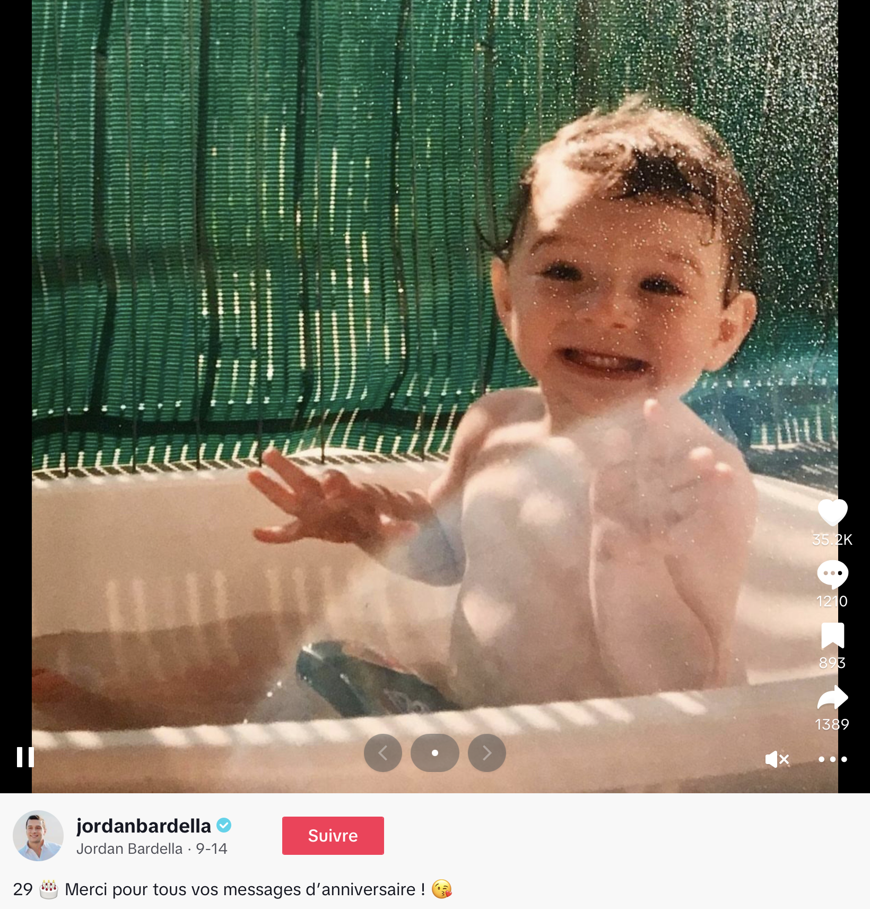
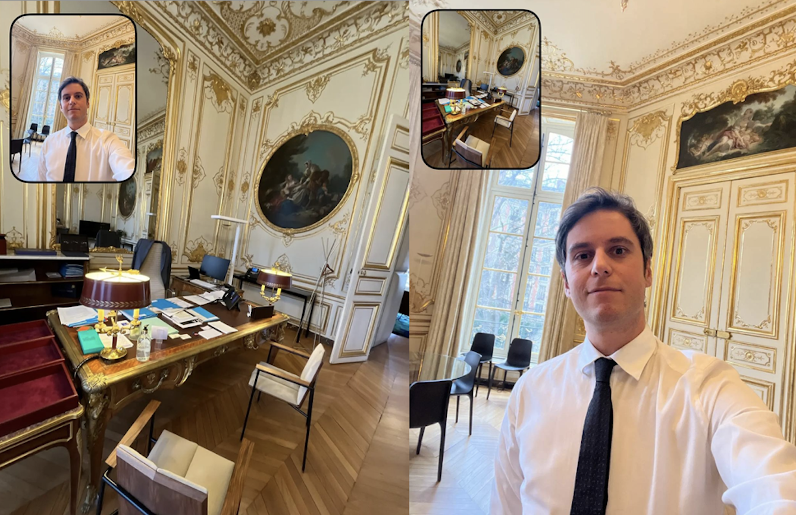

Dominique Boullier, un spécialiste des usages du numérique, explique dans son ouvrage Comment sortir de l’emprise des réseaux sociaux , que les réseaux sociaux, et notamment TikTok transforment la communication politique en un spectacle de courtes interactions, où l'authenticité perçue prime sur le discours de fond.
Les réseaux sociaux sont des plateformes numériques qui facilitent l'interaction entre les individus. Nous avons pu observer que leur essor a profondément transformé la manière dont les acteurs politiques communiquent avec le public. Parmi ces plateformes, TikTok s’impose de plus en plus comme un outil stratégique incontournable.
Ce réseau social a été lancé en 2016 et développé par l'entreprise chinoise ByteDance pour le marché non chinois. Il porte en Chine le nom de Douyin. La plateforme est rapidement devenue populaire chez les jeunes internautes, notamment pendant le confinement en mars 2020, atteignant selon la plateforme environ un milliard d'utilisateurs au troisième trimestre 2024 et 22 millions d'utilisateurs actifs mensuels en France en 2023.
Ce réseau social, principalement populaire auprès des jeunes adultes
, se distingue par sa capacité à toucher un large public grâce à un algorithme particulièrement efficace. Contrairement à des plateformes comme Instagram ou Facebook, où l’audience d’une publication est souvent limitée aux abonnés ou aux groupes d’intérêts, TikTok permet à n’importe quelle vidéo de devenir virale, indépendamment du nombre d’abonnés de l’utilisateur. Ce potentiel de viralité, combiné à des formats de vidéos courts et dynamiques, attire les responsables politiques désireux d'atteindre des segments de population traditionnellement moins réceptifs aux médias analogiques comme la presse écrite.
Pour constater cet effet de viralité qu’induit TikTok, nous avons comparé le nombre d’abonnés sur les différents réseaux sociaux des grandes figures politiques françaises dans un tableau réalisé le 19 octobre 2024. Pour être le plus représentatif possible tout en restant synthétique, nous avons sélectionné deux figures des principaux partis politiques (La France insoumise, Ensemble pour la République et Le Rassemblement national).
| Plateforme | Bardella | Le Pen | Attal | Macron | Mélanchon | Panot |
|---|---|---|---|---|---|---|
| Tiktok | 2M | 1.1M | 531,8k | 4.8M | 2.6M | 1M |
| Likes Tiktok | 52.7M | 17.1M | 11.4M | 39.2M | 43.4M | 11.8M |
| 515k | 3M | 288k | 9.9M | 2.8M | 276k | |
| 818k | 492k | 414k | 3.9M | 466k | 282k |
Nous observons que le réseau social Instagram bénéficie moins de cet effet de viralité puisque le nombre d'abonnés des personnalités politiques est beaucoup plus faible, il se compte en centaines de milliers, tandis que sur TikTok, il se compte en millions. Il existe une dynamique similaire pour Twitter où les nombres d’abonnés sont plus faibles que sur TikTok. Nous pouvons cependant constater que cette logique ne s’applique pas à Emmanuel Macron, ce qui s’explique potentiellement par le fait qu’il soit le Président de la République et donc suivi par une plus grande audience. Il a sûrement plus de partisans qui sont abonnés à son compte, mais également des citoyens qui souhaitent suivre ses actions et possède également un réseau plus large. Jean Luc Mélenchon et Marine Le Pen échappent également en partie à ce raisonnement, ce qui peut s’expliquer par leur longévité dans l’espace politique et leur importance dans la précédente élection présidentielle. Ce sont également des personnalités qui font souvent le buzz.
Nous remarquons une différence d’abonnés entre Jordan Bardella et Marine Le Pen. Cet écart peut s’expliquer par l’effet de viralité qu’introduit TikTok. De plus, Jordan Bardella, en étant plus jeune, saisit plus facilement les codes, les usages et les pratiques des réseaux sociaux. Sur Instagram, il faut généralement faire la démarche soi même de rechercher le profil pour tomber dessus, sur TikTok, il “suffit” de laisser tourner l’algorithme et de mettre en place de bonnes techniques de communication. Nous constatons que TikTok se démarque des autres plateformes par son nombre élevé de likes et d’abonnés et qu’il est donc intéressant de l’explorer.
TikTok, avec son ton léger et divertissant, se distingue des autres plateformes de réseaux sociaux comme Twitter ou Facebook, où la communication politique reste souvent formelle et polarisée. Ce contraste fait de TikTok un terrain particulièrement fertile pour la politique, permettant aux dirigeants de toucher un public jeune à travers des contenus créatifs, humoristiques et participatifs, tels que des défis ou des vidéos virales. La viralité de l'application, alimentée par son algorithme, offre aux politiciens une opportunité unique d'atteindre un large public sans être limitée par leur nombre d'abonnés. Les personnalités politiques apparaissent ainsi plus humaines et accessibles, s'adaptant aux codes de la plateforme pour capter l'attention des jeunes adultes, notamment ceux âgés de 16 à 22 ans, souvent peu engagés dans les débats politiques traditionnels. Ce mode de communication, où l'informel est privilégié, permet de susciter des émotions positives plutôt que de centrer les discussions sur des programmes politiques complexes. Cela rend la politique plus attrayante et accessible à ce public. Ainsi, la viralité et l’accessibilité des contenus sur TikTok en font une plateforme de choix pour la communication politique contemporaine.
Nous allons dans cette exploration répondre avec nos observations à la question suivante : Dans quelle mesure l'essor de TikTok redéfinit-il les codes de la communication politique en offrant une nouvelle plateforme ainsi que de nouveaux modes d'expression pour les personnalités politiques ?
Nous avons mis au point un protocole d’exploration pour analyser la communication politique sur TikTok. Dans un premier temps, nous avons cherché à identifier qualitativement les catégories de public interagissant avec les contenus politiques. Les données sur l’application TikTok sont très peu accessibles, nous n’avons donc pas été en mesure de le faire quantitativement. Nous avons observé qu’il s’agissait en majeure partie de jeunes (d’environ 16 à 25 ans). L’audience reste tout de même diversifiée, bien que majoritairement jeune. Il est également important de préciser que nous nous sommes concentrées sur le TikTok francophone et sur les vidéos et les personnalités politiques françaises pour ne pas se disperser.
Pour sélectionner les comptes des politiciens à analyser, nous nous sommes donc concentrées sur les personnalités que nous avons évoquées précédemment, car ce sont les personnalités politiques les plus présentes sur la plateforme du fait de leur importance au sein de leurs groupes respectifs. Nous nous sommes intéressées aux interactions avec l’audience, notamment au travers du nombre de vues et de likes de vidéos virales, au ton général des commentaires (observé de manière qualitative) ainsi qu’au registre de langue utilisé. Nous avons également observé les sujets de discussion dans les commentaires pour voir si ceux-ci portent plus sur le programme du candidat, son apparence, son humour, ses vidéos…
Nous avons finalement cherché à croiser ces observations afin d’identifier si certaines caractéristiques de communication politique favorisent la viralité, et donc le nombre d’abonnés et de likes. Nous allons maintenant nous intéresser au cœur du sujet : l’appropriation par les politiciens de l'outil numérique qu'est TikTok afin de chercher à toucher une audience plus large en adaptant leurs stratégies de communication politique.
Les réseaux sociaux transforment la manière dont les politiciens interagissent avec leur public. En s’emparant des mêmes outils et formats que les utilisateurs de TikTok, les politiciens cherchent à maximiser leur audience et à se fondre dans l’écosystème viral de la plateforme, redéfinissant ainsi la communication politique traditionnelle.
En effet, pour toucher une large audience sur TikTok il faut faire le buzz, surfer sur la viralité et, pour ce faire, utiliser certaines “trends”, des formats de contenus tendances sur la plateforme.
Par exemple, pour se lancer sur TikTok, Jean-Luc Mélenchon avait conclu astucieusement son premier post
par un pastiche de la chanson Anissa de Wejdene, qui à cette période était dans le top des sons les plus utilisés par les créateurs sur la plateforme. La vidéo est filmée devant la station de métro République en référence à sa phrase restée très célèbre sur la plateforme, reprise dans de nombreux memes et dans les bétisiers “La République c’est moi”. De plus, la description de la vidéo: “Eh #Macron ! Tu hors de ma vue”, est astucieusement choisie en référence aux paroles de la chanson de Wejdene.
Cette stratégie à été couronnée de succès puisque la vidéo compte 76,7k de partages et 566,5k de likes , montrant ainsi une maîtrise des codes de viralité de la plateforme. Jean-Luc Mélenchon n’est pas débutant dans la maîtrise des codes numériques et dans la création de viralité. En effet, sa chaîne YouTube compte 1,13 million d’abonnés et, pendant la présidentielle de 2017, il était le seul candidat présent sur Twitch, plateforme de livestream extrêmement populaire auprès des jeunes.
Dans cette dynamique de surfer sur les codes de viralité, toutes ses vidéos sont complétées par des hashtags en description afin d’être mieux référencées. Cette pratique du hashtag pour référencer et catégoriser son contenu dans des thématiques est spécifique au numérique, et a été utilisée sur les réseaux sociaux, dans un premier temps sur Twitter. Afin de communiquer sur ces plateformes, il est donc nécessaire d’en comprendre les codes afin d’utiliser les bons hashtags en fonction du public ciblé. En faisant référence à un son dans le Top de la plateforme, Jean-Luc Mélenchon s’adapte parfaitement aux codes, montrant qu’il sait identifier les trends populaires et les utiliser pour faire le buzz.
Pour sa deuxième vidéo
, Marine Le Pen utilise la même stratégie : la vidéo est courte, elle dure 30 secondes, donc s’adapte parfaitement aux codes de la plateforme. De plus, sur cette vidéo, elle utilise la chanson Beggin’ du groupe Måneskin (gagnant de l'Eurovision 2021) utilisée par 7,2 M d’utilisateurs sur TikTok. Sur ses vidéos de Noël ses vidéos de Noël
par exemple, elle utilise chaque année la chanson All I want for Christmas is you de Mariah Carey, utilisée par 14 M de personnes.
Dans deux vidéos récentes sorties pendant la période des élections européennes et législatives,
Jordan Bardella évoque les “édits” Bardellatal.
Ces vidéos, réalisées par des utilisateurs TikTok n’ont pas de but politique, elles ne présentent pas d’idées ni de programme. Ces édits sont des vidéos créatives qui mettent en scène un duo romantique inventé entre Jordan Bardella et Gabriel Attal grâce à des montages vidéo d’extraits de moments de complicité inventés durant des débats entre les deux personnalités politiques. Cette tendance a une dimension controversée. En effet, Jordan Bardella et Gabriel Attal ont de profondes divergences politiques, notamment envers les droits des personnes LGBTQ+. Il est donc éthiquement questionnable de se servir de la sexualité de Gabriel Attal pour lui attribuer une relation fictive avec Jordan Bardella. En mentionnant ces édits dans ses vidéos, Jordan Bardella semble chercher à rajeunir son image, à montrer qu’il est connecté sur la plateforme et qu’il sait ce qu’il s’y passe. Cela s'observe notamment dans
une vidéo
où il ne mentionne pas directement les édits, mais où il est filmé en train de regarder des vidéos sur son téléphone, sur lequel nous entendons la musique utilisée dans la grande majorité des édits Bardellatal.
Cela démontre une parfaite connaissance de la tendance sur l’outil numérique ainsi que du vocabulaire utilisé sur la plateforme. Cela participe également à un brouillage de ses positions. En effet, puisqu’il mentionne ces édits qui lui attribuent une relation avec un homme, le public peut être amené à penser qu’il est ouvert sur le sujet. En faisant référence à cette tendance sur TikTok, sa vidéo devient nécessairement virale et repartagée, sûrement par des personnes étonnées que Jordan Bardella ait connaissance de l'existence de cette "trend" et de ces vidéos.
Cette mention des édits entre ces deux personnages politiques participe également à la dédiabolisation du Rassemblement national. En effet, les idées politiques de ce parti sont controversées et mal vues par une partie de la population. Maintenant, les électeurs de ce parti en sont fiers et mettent en avant leur affiliation sur les réseaux sociaux. Ce changement d’attitude peut s’expliquer par une communication effectuée par le RN pour dédiaboliser son image afin d’attirer de nouveaux électeurs. Cela passe notamment par les réseaux sociaux, où les politiciens du Rassemblement National se montrent comme accessibles et sympathiques, essayant ainsi de faire oublier leurs idées controversées. Quand Jordan Bardella mentionne les édits qui le mettent en scène avec son adversaire en rigolant, il se rend ainsi accessible et connecté au monde. Ainsi, les spectateurs peuvent s’identifier à lui et oublier ses idées politiques en voyant plus l’homme que le politicien.

Un autre exemple est le
partage d’une photo de lui enfant pour son anniversaire sur son compte TikTok.
La section des commentaires est pleine de félicitations chaleureuses comme celles que l’on ferait à un ami ou à un membre de sa famille et de soutiens enthousiastes, dont ceux de certains abonnés qui semblent réellement touchés par cette photo de lui enfant. Un utilisateur écrit en commentaire : “C’est ça que j’adore avec le RN. Ils sont humains, ils partagent, écoutent, discutent, comprennent. Même sans les connaître on se sent proche d’eux… je sais pas comment les autres font pour les haïr”. D’autres ajoutent des messages affectueux : “déjà petit, il était charismatique !”, “Joyeux anniversaire Jordan !! Et vive la France”. Cette publication, par le choix d’une photo tendre et “mignonne”, vise clairement à renforcer la proximité affective entre Jordan Bardella et ses partisans, créant un lien émotionnel fort qui dépasse les frontières classiques entre politicien et électorat. En jouant sur la familiarité et les émotions, Jordan Bardella invite ses abonnés à lui souhaiter un joyeux anniversaire comme s’il faisait partie de leur entourage proche. Toutes ces manœuvres de communication permettent ainsi au RN de faire oublier l’essence même du parti et de voir ses politiciens comme des humains et non des responsables politiques. Sur le plan personnel, nous pouvons supposer que Jordan Bardella n’accorde que peu d’importance à recevoir de nombreux messages de la part d’étrangers sur Internet, mais, sur le plan électoral, cela renforce le lien émotionnel qu’il entretient avec ses partisans ainsi que leur soutien au candidat qu’ils ont l’impression de connaître plus personnellement.
Le politainment est un mot valise qui fusionne la politique et le divertissement. Il décrit la tendance croissante des acteurs du champ politique à s'inviter dans des émissions de divertissement et de talk-shows, une pratique popularisée dès les années 1980 pour renouveler et moderniser la communication politique. Aujourd’hui, cette dynamique s’est étendue aux réseaux sociaux, où les politiciens exploitent des formats ludiques et des contenus viraux pour toucher de larges audiences.
Le sociologue Érik Neveu analyse cette désacralisation comme un moyen de rapprocher les citoyens de personnalités politiques souvent perçues comme distantes. Selon lui, cela pourrait permettre d’accéder à leur « véritable » personnalité, démasquée de ses aspects officiels et solennels (Erik Neveu, La politique saisie par le divertissement , Hermès Science publications, 2003). Cette stratégie crée du buzz grâce à des contenus simplifiés et éphémères, mais tend à réduire les échanges politiques en matière de fond. Sur TikTok, par exemple, les vidéos de débats politiques circulent souvent sous forme de courts extraits du fait du format court de la plateforme, mais l’absence de contexte donne lieu à des interprétations biaisées et limite considérablement la profondeur du propos ainsi que son implication politique.
Cette simplification, propre aux réseaux sociaux, alimente ce que certains appellent la “culture du vide”, une forme de communication pauvre en contenu de fond. Dans ce cadre, l’essentiel n’est pas de partager des idées, mais de présenter une image attractive qui capte l’attention sans s’attarder sur des informations importantes. Les plateformes, dont TikTok, encouragent ainsi une représentation superficielle où apparence et charisme surpassent les enjeux politiques. TikTok, Instagram, et même des réseaux comme BeReal favorisent cette esthétique de la fausse authenticité calculée, où les politiciens construisent une image personnelle souvent peu représentative de leur engagement politique réel puisque le but est d’attirer le spectateur.
Sur les plateformes comme TikTok, Instagram, ou même dans les publications BeReal, cette mise en scène conduit à une représentation idéalisée de soi, alignée sur ce que les utilisateurs veulent voir. Dans le cas des politiciens sur TikTok, cela se traduit par une communication centrée sur leur personnalité ou des moments de vie stylisés, qui visent plus à renforcer leur popularité qu’à expliquer ou approfondir leurs projets. Les réseaux sociaux deviennent alors des vitrines de moments choisis et mis en scène, offrant une version simplifiée et souvent embellie de leur réalité, ce qui peut finalement contribuer à entretenir une image publique qui n’engage que faiblement sur le fond.
Nous pouvons par exemple constater cela sur les BeReal de Gabriel Attal. La plateforme BeReal s’éloigne dans son fonctionnement de notre cadre d’analyse centré sur TikTok mais elle est tout de même intéressante pour expliquer ce phénomène.
Le principe de l’application Bereal est de se prendre en photo (en caméra avant et arrière simultanément) à un moment aléatoire de la journée signalé par une notification. Il n’y a pas de filtres, les valeurs de l’application reposent sur la volonté d’être le plus réel et naturel possible. Il est donc logique de se dire que ce BeReal de Gabriel Attal suit cette dynamique. Cependant, ce n’est pas le cas. En effet, les personnalités publiques ne sont pas soumises à la contrainte de la notification : elles peuvent prendre le BeReal n’importe quand dans la journée et ainsi soigner la mise en scène.

C’est ce que nous observons sur ce BeReal : Gabriel Attal (alors encore premier ministre) prend un selfie dans son bureau à Matignon, celui-ci est totalement désordonné, comme il pourrait l’être chez nous, il est confortablement installé, sans sa veste et sourit. Il est également important de noter que BeReal est une plateforme où les publications sont réservées aux amis. Publier sur cette plateforme est alors stratégique pour se rapprocher de l'électorat. Nous avons l’impression d’être privilégiés, d’avoir accès à de véritables moments de vie de Gabriel Attal, d’être comme son ami en ayant accès à ses publications. L’enjeu de la présence de Gabriel Attal sur BeReal est de montrer son quotidien de la manière la plus réelle possible dans l’imagination du public (puisque ce sont les valeurs de l’application). Ainsi, il façonne sa personnalité et son image en utilisant des stratégies de divertissement plutôt que de véritables idées politiques. Ce type de communication est moins formel que ce que nous pouvons voir à la télévision. Gabriel Attal ne porte pas sa veste de costume, il apparaît même sur certains BeReal en T-shirt avec son chien dans ses bras. À la télévision, la coutume serait de le voir dans un rôle officiel, habillé en costume, représentant ainsi le sérieux de sa fonction de Premier ministre à l’époque. Cette technique de communication rendue possible par les réseaux sociaux permet donc de créer une nouvelle personnalité aux acteurs politiques, jugée comme plus authentique que sur les médias traditionnels. Néanmoins, il est important de se souvenir que chaque BeReal est soigneusement préparé et n'est en aucun cas authentique comme le voudrait l'application. Sur la photo, Gabriel Attal est dans son bureau de Premier ministre, endroit inaccessible pour la majorité des citoyens.
Dans une autre vidéo TikTok
, Jordan Bardella se met en scène dans les coulisses des évènements officiels dans une situation anodine où il plaisante sur son appétit tout en mettant en avant une alimentation saine, jouant sur l’image du bon vivant français. Bien qu’inutile du point de vue politique, cette vidéo participe à la construction d’une personnalité sympathique et accessible, qui semble incarner une version idéalisée du Français attaché aux plaisirs simples de la vie, tout en étant soucieux de sa santé. Cette mise en scène contribue à humaniser Jordan Bardella et à renforcer une image cohérente avec les valeurs conservatrices qu’il défend : une vision d’un citoyen en pleine forme, enraciné dans une culture de convivialité et de bonne santé. Ce type de contenu, qui reste détaché des idées politiques concrètes, mise davantage sur la popularité et l’image personnelle, en utilisant la proximité apparente et l’authenticité pour séduire une audience en quête de personnalités avec lesquelles elle peut s’identifier.
Comme nous l’avons vu, de la même manière que Gabriel Attal et Jordan Bardella, Jean-Luc Mélenchon multiplie les références culturelles qui parlent aux jeunes dans ses vidéos, notamment en utilisant des sons tendances ou en y faisant référence, par exemple lorsqu’il utilise le générique de père castor par dessus un discours d’Emmanuel Macron pour dénoncer ses mensonges sur TikTok. Dans ce type de vidéo, il n’y a aucun message politique autre que d’attaquer l’adversaire. Il ne mentionne pas son programme, mais cherche à attirer de nouvelles personnes en utilisant l’humour pour ensuite les rediriger vers des vidéos politisées. Cette forme de communication est pauvre en contenu politique, elle ne vise que le divertissement afin d’attirer le public. Sur son compte, les vidéos les plus populaires sont les vidéos pauvres en contenu politique, où il ne fait qu’attaquer son adversaire en mobilisant des références populaires. En se faisant, il construit une communication sur des contenus simplifiés, participant ainsi à une “culture du vide”, l’art de ne rien dire.
Pour communiquer sur les réseaux sociaux, il est nécessaire et important de s’adapter à son public. Dans les médias traditionnels tels que les journaux, les journalistes peuvent s’adapter à leur public cible en utilisant un vocabulaire précis, qui raisonne avec certaines valeurs ou certaines volontés des lecteurs. Par exemple, dans un journal d’information, le ton et le vocabulaire employés sont plus formels que dans un journal de presse "people" que l’on veut souvent lire dans une volonté de détente, où l’on sera donc plus attiré par un vocabulaire faisant écho dans notre imaginaire à deux amis en train de raconter des potins.
Dans cette même dynamique, les politiciens ont besoin de s’adapter au public qu’ils ciblent. Il est donc nécessaire de se renseigner sur le vocabulaire courant sur la plateforme afin de toucher un maximum d’audience. Ce vocabulaire est très différent de celui que l’on peut entendre à la télévision dans le journal ou lire dans les journaux traditionnels.
Par exemple, Jean-Luc Mélenchon communique sur TikTok juste avant son débat contre Eric Zemmour le 23 septembre dernier en disant
« Le Z en PLS. Il est tout cassé »
. Il accompagne cette phrase d’une photographie d'Eric Zemmour grimaçant, ressemblant à un meme . Par la suite, le spectateur voit une séquence dans laquelle Mélenchon boit un lait-fraise pour se donner des forces. Politiquement parlant, cette vidéo n’a aucun intérêt, elle ne présente pas d’idées, pas de solutions, pas de programme, elle alimente ainsi la culture du vide présente sur les réseaux sociaux. Mais, en termes de communication politique, cette vidéo nous permet d’illustrer ce que nous expliquons : Jean-Luc Mélenchon appelle Eric Zemmour “ le Z”, terme très présent sur TikTok pour désigner le candidat. Il se montre ainsi proche de son audience, renvoyant le message “je suis comme vous, je parle comme vous”. Ce message est amplifié par la consommation du lait fraise qui paraît enfantine et qui le présente comme une personne normale, loin du luxe de la vie politique que nous avons tendance à imaginer. Dans des journaux traditionnels, il est inconcevable de lire “le Z” pour désigner Eric Zemmour. Ce vocabulaire n’est pas professionnel, il ne parle pas à tout le monde donc n’est pas clair. Les personnes qui ne consultent pas activement TikTok n’ont probablement jamais entendu parler de ce surnom.
De même,
dans une vidéo de mars 2024,
Jordan Bardella, surnommé par ses partisans “Le J”, se met en scène dans une ambiance décontractée et humoristique pendant un bain de foule. En fond sonore de la vidéo il utilise le morceau célèbre de Jul En bande organisée et il légende sa vidéo par un clin d’œil à la chanson et à son surnom : “Le J c’est le…”, incitant ses abonnés à compléter implicitement par le “S”, pour ceux qui captent la référence. Il arbore également une paire de lunettes personnalisées portant l’inscription “le J” en référence à son surnom. Tout comme la vidéo de Jean-Luc Mélenchon, cette référence à Jul, connu auprès des jeunes utilisateurs de la plateforme, montre une réelle connaissance de l’outil ainsi qu’une adaptation au vocabulaire de ses jeunes partisans afin de paraître plus proche et plus proche de son public.
De plus, des communautés TikTok peuvent partager les mêmes références. Par exemple, un discours de Raphaël Glucksmann au JT de France 2 dans lequel il prononce la phrase : « Il faut un cap clair. On va pas refaire la Nupes là. Il y a eu une inversion des rapports de force. Je suis en tête à gauche. Donc voilà les conditions » le 10 juin 2024 a été repris sur les réseaux sociaux. Beaucoup d'utilisateurs ont remixé ces phrases en l’imitant ou en créant par exemple
une version country à l'aide de l'intelligence artificielle,
certaines vidéos atteignant plusieurs millions de vues.
Nous pouvons observer une récupération politique des édits et des vidéos virales pour faire le buzz : David Guiraud qui reprend la célèbre phrase de Raphaël Glucksmann “Il faut un cap clair” ou encore Gabriel Attal qui commente une vidéo du créateur de la version country en demandant de faire la même chose avec sa phrase devenue célèbre sur la plateforme: “tu casses tu répares, tu salis tu nettoies”. Ce commentaire a créé de nombreuses réactions étonnées et amusées d’utilisateurs qui ne s’attendaient pas à un tel commentaire de la part de Gabriel Attal, qui était à l’époque Premier ministre. Les politiciens manient donc astucieusement ce vocabulaire et cette mise en scène afin de susciter des réactions positives et amusées parmi les utilisateurs.
Cette utilisation du vocabulaire et de la mise en scène pour paraître proche de son audience fait appel au registre émotionnel de l’amitié, de la curiosité. Les hommes politiques nous donnent accès à leur quotidien et se faisant le mettent en scène comme étant extrêmement normal, proche du nôtre. Mais, il n’est pas certain que bon nombre d’entre nous possèdent des moulures dorées au plafond assorties d’un mobilier en velours et de peintures, comme montré dans le bureau de Gabriel Attal sur BeReal. La volonté est de se montrer proche des citoyens, que cela soit en consommant un lait fraise, en utilisant un vocabulaire jeune ou encore en postant des BeReal initialement destinées aux amis proches.
Un concept intéressant pour penser la communication politique sur TikTok est l'horizontalité des interactions politiques sur les réseaux sociaux qui remet en question les hiérarchies traditionnelles. Il fait référence à la manière dont les réseaux sociaux permettent des échanges directs, égalitaires et non hiérarchisés entre les citoyens et les gouvernants. Un espace de participation directe et d'échanges entre les citoyens et leurs représentants est rendu possible. Il permet de transformer la façon dont l'opinion publique se forme et se manifeste. Contrairement à la structure verticale de la démocratie traditionnelle, où les élus prennent des décisions et le peuple les subit, les réseaux sociaux permettent à chacun d’émettre des opinions politiques, de dialoguer et d'interagir avec des figures d'autorité en temps réel. Les réseaux sociaux éliminent les intermédiaires et rendent ces échanges accessibles à tous, ce qui démocratise l'accès à la parole publique et au débat politique.
Sur les réseaux sociaux, il existe un contournement des filtres médiatiques traditionnels cherchant à créer cette proximité avec les citoyens en s’exprimant sans intermédiaire.
"Les politiques abordent des questions qui sont différentes de ce dont on a l'habitude de voir sur les plateaux télé, quand ils font des FAQ (foire aux questions) ou qu'ils répondent directement aux commentaires face caméra, ça donne plus de proximité, ça rend plus proche. C'est ce qu'on aime, nous les jeunes, on aime l'authenticité"
, décrit Tom, jeune actif de 23 ans
sur radiofrance.
D’un côté, cela permet aux jeunes utilisateurs de s’informer auprès des politiciens et de s’intéresser à la politique. Comme, les politiciens sont comme à portée de main, les jeunes adultes les voient comme des humains et non des représentants. Il ne faut pas oublier que les politiciens ont pour mission de nous représenter et de participer au bon fonctionnement de notre société. En vulgarisant leurs propos afin de toucher plus de monde, ils les essentialisent et les réduisent. Les spectateurs ont donc une vision restrictive de leurs idées, ce qui peut les tromper. Cette simplification peut donc être un danger pour la compréhension des discours politiques. Ces jeunes citoyens vont donc parfois voter sans se renseigner davantage sur les programmes politiques et se contenter de voter pour l’image des politiques sur les réseaux sociaux.
Par exemple,
dans cette vidéo
Emmanuel Macron répond aux questions des citoyens directement posées en commentaires sous le format FAQ, ce qui donne une impression de proximité et d’authenticité. En évitant de passer par des journaux ou d’autres types de médias qui auraient la possibilité de filtrer l’information, l’équipe de communication d’Emmanuel Macron sélectionne elle-même les commentaires auxquels le président doit répondre. Ce format de vidéo, filmé sous la forme d’un selfie donne une impression d’accessibilité et d’ouverture au dialogue et aux questions. Le président a également diffusé une vidéo en habit de boxe, pas rasé, pour parler des Jeux Olympiques. Dans cette vidéo, il veut paraître naturel, il laisse aussi un petit blanc d'une seconde au moment où il lance la vidéo, afin de montrer qu'il n'y a aucun montage. Évidemment, c’est fait exprès, c'est une technique de communication
(d'après radiofrance).
De plus, les équipes de communication répondent de manière régulière aux utilisateurs TikTok en commentaire, même lorsqu’il s’agit de questions que l’on pourrait juger comme “sans importance”. La réponse en commentaire induit une proximité directe flatteuse avec l'électorat, qui n’aurait pas été possible, ou du moins pas à cette ampleur en passant par les médias traditionnels qui requièrent une sélection plus réduite des questions posées par les citoyens.
De même, Jean-Luc Mélenchon organise sur ses réseaux sociaux des sessions de questions-réponses avec les internautes en utilisant le hashtag #alloMelenchon. Dans cette dynamique de proximité avec les citoyens, l’intégralité des vidéos présentes sur le compte de Jean-Luc Mélenchon sont sous-titrées. L’utilisation des sous-titres traduit cette dynamique de proximité avec son audience, de descente du propos vers le public en le rendant facilement accessible aux personnes qui ne pourraient pas l’écouter.
La transformation de la communication politique sur TikTok a permis d’atteindre le public jeune de l’application, potentiellement éloigné des canaux d’information classiques. Cette communication comporte cependant le risque, comme nous l’avons abordé, de simplification et de superficialité du discours politique. Sur cette plateforme caractérisée par des vidéos courtes, les messages sont réduits aux codes de viralité. Cette approche, certes plus accessible, réduit la complexité des enjeux en limitant la place de l’analyse et des arguments de fond. Le discours devient moins une question de débat et d’idées qu’un combat entre des personnalités politiques pour savoir qui maîtrisera le mieux les nouveaux outils de communication politique que nous avons identifiés.
Pour certains jeunes, TikTok peut devenir la principale source d’exposition aux idées politiques, comme nous pouvons le constater à travers les comptes d’actualités présents sur la plateforme et sur les réseaux sociaux (donc non reliés à des canaux de diffusion de médias traditionnels) qui comptent des millions d’abonnés comme Hugodecrypte (6,6 M d’abonnés) ou Brutofficiel (8M d’abonnés). Ce mode d’information expose aux risques d’une compréhension simplifiée des enjeux. Un élu qui crée des vidéos divertissantes et humoristiques gagne en popularité non pour ses idées, mais pour sa capacité à devenir viral et à créer des contenus accessibles. Les critères d’évaluation et de crédibilité donnés aux figures politiques changent ; ils sont moins jugés sur la pertinence de leur programme, mais sur leur capacité à divertir le public. La formation d’opinion peut ainsi se construire sur l’affect émotionnel plutôt que sur la réflexion.
Nous pouvons, au terme de notre exploration, supposer que cette simplification de la communication politique induite par TikTok peut avoir des répercussions démocratiques. En effet, l’attention, si elle se porte uniquement sur l’authenticité ressentie et la proximité, peut mener les citoyens à négliger les programmes et la profondeur des enjeux politiques. De plus, en basant la communication sur les émotions plutôt que la réflexion, les personnalités politiques n’encouragent pas le débat éclairé et réfléchi et font de la politique un divertissement vidé de son essence.
En somme, TikTok contribue à redéfinir les codes de la communication politique en ligne. La capacité de viralité de cette plateforme permet aux personnalités politiques d'accéder à un public jeune, souvent dépolitisé ou peu politisé, en contournant les filtres médiatiques traditionnels. En s’appropriant les codes de TikTok, qui impliquent une mise en scène courte, légère, humoristique faisant penser à “la vraie vie”, les acteurs politiques se présentent comme authentiques et proches du public. Ce mode de communication met en lumière la superficialité des contenus diffusés, et participe ainsi à une “culture du vide” favorisant des échanges émotionnels et esthétiques plutôt que riches en contenus politiques réels et profonds. L’utilisation de TikTok par les personnalités politiques représente une nouvelle façon de se présenter aux citoyens, mais interroge également les implications démocratiques de cette transformation de la communication.
Au terme de cette exploration numérique, nous pouvons nous poser la question suivante afin d’ouvrir notre réflexion à un débat politique fondé sur ce que nous avons appris de nos observations : Comment la communication politique pourrait-elle évoluer pour éviter les dérives de la "culture du vide" tout en restant accessible aux citoyens ?
Bibliographie
BUSSON, Alain. « Dominique BOULLIER, Comment sortir de l’emprise des réseaux sociaux, Paris, Le Passeur, 2020, 304 p. », Réseaux. 18 février 2022, vol.231 no 1. p. 275‑278. En ligne
Sur Tiktok, la bromance « BardellAttal » sert « la dédiabolisation » du RN. 2024. En ligne
Quand les partis politiques misent sur Tik Tok pour séduire les jeunes électeurs. 2024. En ligne
La présidentielle 2022 se joue aussi sur TikTok. En ligne
TikTok - Faits et chiffres. En ligne
« Les réseaux sociaux : nouveaux espaces de contestation et de reconstruction de la politique ? » | Conseil constitutionnel. En ligne
Pourquoi les politiques misent sur les réseaux sociaux. En ligne